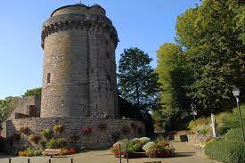
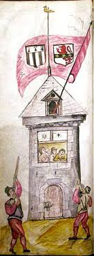

Elle doit son nom à un concours d'adresse destiné aux archers et arbalétriers qui leur permettait de s'entraîner entre les combats. La cible était un oiseau multicolore installé à son sommet, les vainqueurs étaient exonérés d'impôts. La Tour servi de prison aux XIXè et XXè siècles puis fut restaurée dans les années 1970.
Ensemble des biens et des obligations d'une personne (physique ou morale) ou d'un groupe de personnes, appréciables en argent, et dans lequel entrent les actifs (valeurs, créances) et les passifs (dettes, engagements). Patrimoine financier, foncier, immobilier; les patrimoines des ménages.

Ce qui est transmis à une personne, une collectivité, par les ancêtres, les générations précédentes, et qui est considéré comme un héritage commun. Patrimoine archéologique, artistique, culturel, intellectuel, religieux; patrimoine collectif, national, social; patrimoine d'une nation, d'un peuple.
